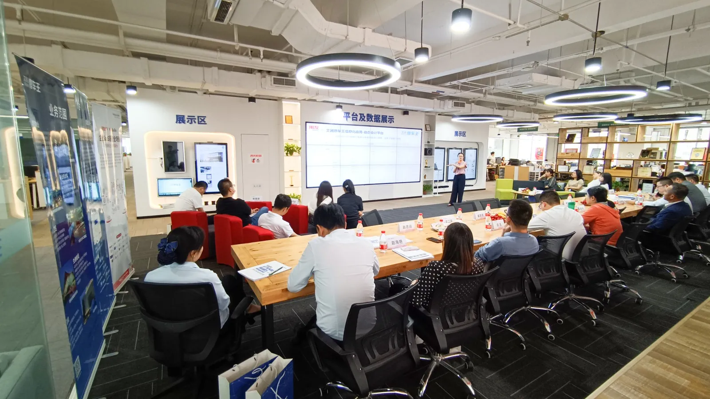
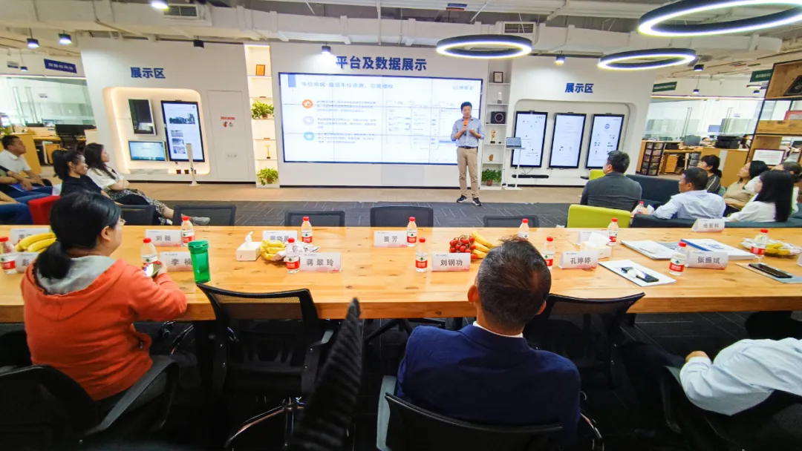
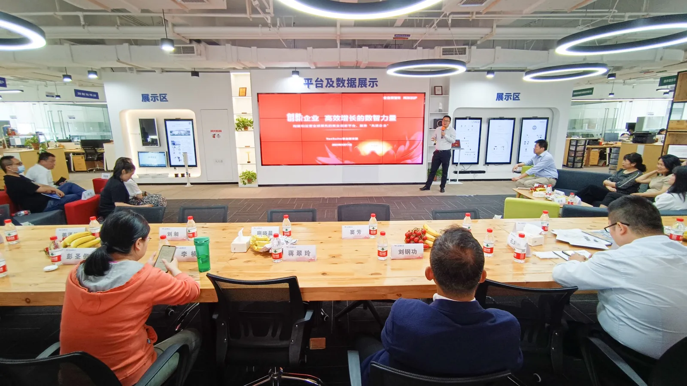
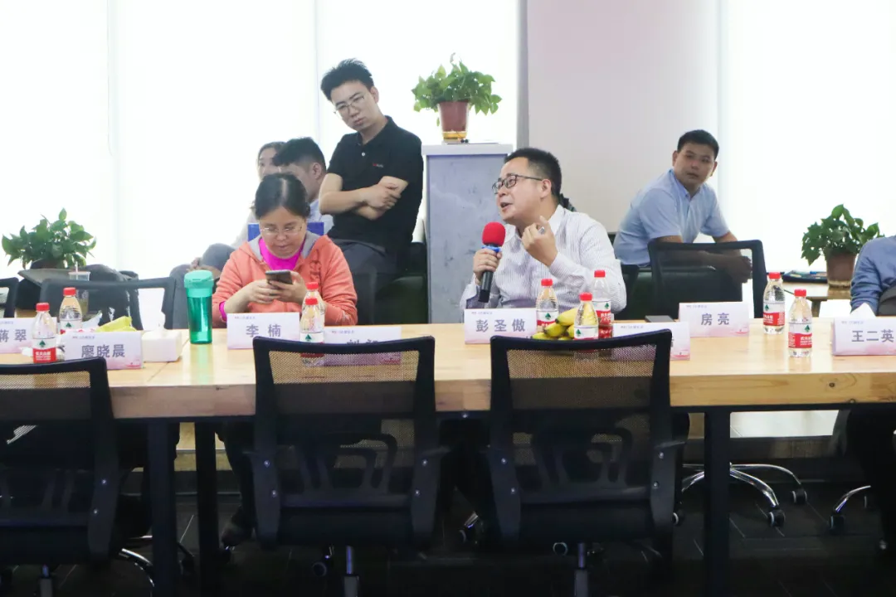
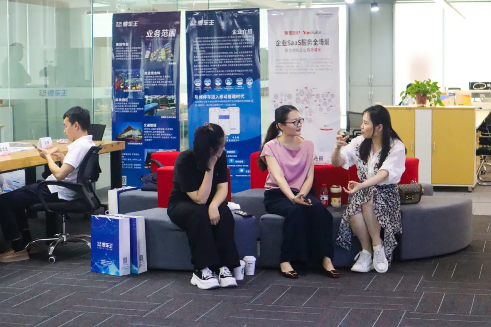

EVENT PLANNING / INDUSTRY SALON
数智化创新主题沙龙
艾润停车王 × 用友网络陕西分公司
以异业合作为契机，通过主题分享与对话交流，探索企业与停车管理的数智化转型。

01 / PROJECT OVERVIEW
项目背景
艾润停车王携手用友网络陕西分公司，共同举办“数智化创新赋能企业转型——走进艾润停车王”主题活动。以异业合作为目的，活动邀请物业及相关企业代表参与，围绕移动物联在停车管理中的应用，以及企业数智化转型与业务融合展开分享和交流。
02 / OBJECTIVES
活动目标
连接企业代表与行业伙伴，围绕实际管理需求开展交流。
结合停车管理场景，介绍移动物联及数字化应用方案。
联合用友网络连接不同行业资源，通过活动交流探索合作机会。
03 / MY ROLE
个人职责与贡献
作为活动负责人，统筹项目从前期筹备到现场执行及后续整理的完整流程，承担内部团队、合作方与嘉宾之间的沟通协调，推动联合沙龙各环节衔接与落地。
围绕数智化创新主题及企业嘉宾的交流需求，统筹活动内容、流程与筹备安排。
对接内部团队、用友网络陕西分公司及参与嘉宾，推进活动信息与筹备事项的沟通。
统筹主题分享、产品交流和数智会客厅等现场环节，协调活动流程与执行。
整理现场照片与活动内容，为后续传播及项目复盘提供资料。
04 / COLLABORATION
异业合作与组织思路
活动以企业数智化转型为共同话题，将停车管理应用与企业服务领域的实践结合起来。作为活动负责人，我负责项目全程统筹及内外部沟通，协调内部团队、用友网络陕西分公司和参与嘉宾，让主题分享、企业交流与数智会客厅形成完整的活动体验。
确定共同议题
围绕移动物联停车管理与企业数智化转型，连接不同行业的关注点。
推进多方沟通
协调内部团队、合作方与嘉宾，推动活动筹备和现场组织。
创造交流场景
结合主题分享和会客厅讨论，让企业代表围绕实际问题交流。
05 / PROGRAM
活动内容
停车管理数智化
围绕停车管理中的数据、运营与服务问题，分享移动物联平台及多车场在线管理的应用。
企业转型实践
结合企业实践，交流内部协同、业务与财务一体化，以及数智化转型经验。
数智会客厅
邀请企业嘉宾围绕停车管理需求、转型中的实际问题及业务融合展开讨论。
06 / ON SITE
活动现场
活动以主题分享和数智会客厅相结合的形式展开：从停车管理的实际需求出发，展示移动物联与企业数智化实践，再通过现场讨论和自由交流，让不同企业代表分享各自的思考。




07 / PROJECT OUTCOMES
活动成果
邀请物业及相关企业代表参与，围绕停车管理与企业转型展开讨论。
通过多场主题分享，展示停车管理和企业运营中的数智化应用。
携手用友网络联合举办沙龙，连接停车管理、企业服务与物业等领域的参与方，为后续沟通与合作搭建交流平台。